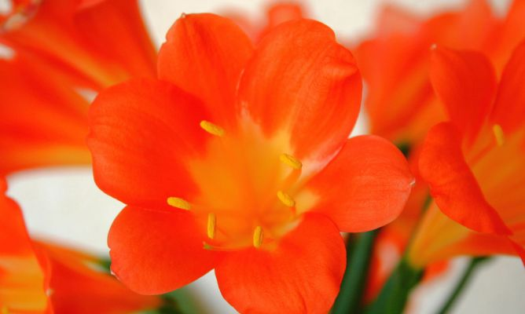

Welcome a la vida naranja
This is flores naranjas , Las flores naranjas tienen anclado su significado a las implicaciones psicológicas y simbólicas del propio color.El naranja también es el color del fuego flameante, por lo que puede indicar precaución o cuidado. Sin embargo, en las flores nos sugiere placer, regocijo, presencia de sol y por tanto luz, implicaciones que nos posibilitan un sinfín de situaciones en las que regalar una flor naranja puede ser una decisión. Las flores naranjas destacan por su belleza vivaz y su significado implícito. Pueden constituirse en un elemento muy útil para regalar o para ambientar un espacio, pero si no se conocen sus contextos asociados ni sus características generales, se pueden convertir en justamente lo contrario. Para conocer un poco más sobre ambos elementos hemos preparado este artículo..